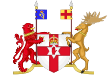

|
|
|
Lord of the church, we pray for our renewing: Christ over all, our undivided aim. Fire of the Spirit, burn for our enduing, wind of the Spirit, fan the living flame! We turn to Christ amid our fear and failing, the will that lacks the courage to be free, the weary labours, all but unavailing, to bring us nearer what a church should be. Lord of the church, we seek a Father's blessing, a true repentance and a faith restored, a swift obedience and a new possessing, filled with the Holy Spirit of the Lord! We turn to Christ from all our restless striving, unnumbered voices with a single prayer: the living water for our souls' reviving, in Christ to live, and love and serve and care. Lord of the church, we long for our uniting, true to one calling, by one vision stirred; one cross proclaiming and one creed reciting, one in the truth of Jesus and his word. So lead us on; till toil and trouble ended, one church triumphant one new song shall sing, to praise his glory, risen and ascended, Christ over all, the everlasting King! |
548教會的主 |
|
|
|
|
|
|

【教會的主】專輯：普天頌讚－會眾聖詩原曲：Lord of the Church https://youtu.be/3o6QGXiyzSk -
Lord of the Church with lyrics for our Sunday service. Words: 1984
Dudley-Smith, Timothy
https://youtu.be/wT-TnUGpcCQ https://youtu.be/Mouj27bFBhk
| Text: | Lord of the Church, we pray for our renewing |
| Author: | Timothy Dudley-Smith, b. 1926 |
| Tune: | LONDONDERRY AIR |
| Arranger: | John Barnard, b. 1948 |
| Short Name: | Timothy Dudley-Smith |
| Full Name: | Dudley-Smith, Timothy, 1926- |
| Birth Year: | 1926 |
Timothy Dudley-Smith (b. 1926)

Educated at Pembroke College and Ridley Hall, Cambridge, Dudley-Smith has served the Church of England since his ordination in 1950. He has occupied a number of church positions, including parish priest in the diocese of Southwark (1953-1962), archdeacon of Norwich (1973-1981), and bishop of Thetford, Norfolk, from 1981 until his retirement in 1992. He also edited a Christian magazine, Crusade, which was founded after Billy Graham's 1955 London crusade. Dudley-Smith began writing comic verse while a student at Cambridge; he did not begin to write hymns until the 1960s. Many of his several hundred hymn texts have been collected in Lift Every Heart: Collected Hymns 1961-1983 (1984), Songs of Deliverance: Thirty-six New Hymns (1988), and A Voice of Singing (1993). The writer of Christian Literature and the Church (1963), Someone Who Beckons (1978), and Praying with the English Hymn Writers (1989), Dudley-Smith has also served on various editorial committees, including the committee that published Psalm Praise (1973).
史密斯劍橋時期開始寫詩，每年固定創作 6-8 首新詩，有 300 首以上作品，其中多首是英語世界常用的聖詩。達理史密斯 1955-60 年間任福音聯盟秘書長時曾配合葛理翰（Billy Graham）牧師佈道會編輯《聖戰》（Crusade）雜誌，2003 年美國希望出版社（Hope Publishing Company）將他之前所著四本詩歌集彙整出版為《讚美之家》（A House of Praise）一書；同年亦獲英國皇家勳章聖詩貢獻獎。達理史密斯也是美加聖詩學會（Hymn Society in the United States and Canada）院士、皇家教會音樂學院（Royal School of Church Music）院士，2009 年獲頒英國杜勒姆大學（University of Durham）榮譽神學博士。
英國聖詩大爆炸— 1960 年代中期，英國多位詩人開始以較現代的用語寫出反映現代議題的信仰詮釋，如科技、太空、環保、公義、旅遊，及天主教第二大公會議後普世教會交流、合一等，聖詩 479 首 Timothy Dudley-Smith (b.1926)寫的〈看此個破碎的世界〉(華語：看哪!今日破碎世界)即其中一首。
Tune Information
| Title: | LONDONDERRY AIR |
| Composer: | Anonymous |
| Place Of Origin: | Northern Ireland |
| Meter: | 11.10.11.10 D |
| Incipit: | 71232 36532 16134 |
| Key: | C Major |
| Source: | Air from County Derry;Traditional Irish melody |
| Copyright: | Public Domain |
Lord of the Church《教會的主》-敬拜探知
Lord of the Church 《教會的主》
英國牧師兼著名聖詩作詞人Timothy Dudley Smith (1926~)，於1976年創作了Lord of the
Church這首詞（中文翻譯為《教會的主》，請參看中文詞及簡譜），全詩共有3節，每節8句，每句分別有11、10、11、10、11、10、11、及10個音節，而每句的最後音節更是隔行押韻，佈局匠心獨運！但更難得的是，其中內容道盡教會的本質、面對困境和出路，對於今日飽受世俗主義和消費主義攻擊的教會來說，此曲應該為我們帶來共嗚與安慰。現在就讓我們逐節欣賞Timothy這作品：
1. Lord of the church, we pray for our renewing:
Christ over all, our undivided aim;
Fire of the Spirit, burn for our enduing,
Wind of the Spirit, fan the living flame!
We turn to Christ amid our fear and failing,
The will that lacks the courage to be free,
The weary labours, all but unavailing,
To bring us nearer what a church should be.
俗語云「人窮則呼天」。教會亦往往是在發現自身的軟弱和危難時，才開始真正熱切地禱告。詩人說今日的教會正面對恐懼(Fear)、失敗(Failing)、缺乏享受真自由的勇氣(Lack
the courage to be free)、使人勞累的重擔(Weary labours)、但成效不彰(All but
unavailing)等問題，就在這重重挫敗的慘霧中，詩人帶領信眾向那位教會的主(Lord of the Church)發問：「怎樣才算真正的教會？(What
a church should be)」並且我們更要祈求那如風、如火的聖靈，賜我們更新教會的恩賜和熱情！
2. Lord of the church, we seek a Father’s blessing,
A true repentence and a faith restored,
A swift obedience and a new possessing,
Filled with the Holy Spirit of the Lord!
We turn to Christ from all our restless striving,
Unnumbered voices with a single prayer–
The living water for our souls’ reviving,
In Christ to live and love and serve and care.
第二節歌詞給我們看到教會的另一面貌─屬靈的家，在其中我們以同一位神為父親(Father)。可惜天父很多兒女都如浪子一樣，時時頂撞爸爸。我們何時才有真正的悔改(True
repentence)呢？詩人又深切體會到我們今日很多的疲憊都是源於我們一些出自自我的固執(All our restless
striving)，當我們願意愈快順服主(Swift obedience)，我們自然愈快得著靈裡的復甦(Soul’s
reviving)。還得一提，復甦不是單為復甦；復甦乃為要活出在基督裡的愛、關懷與服侍(In Christ to live and love and serve
and care)。

3. Lord of the church, we long for our uniting,
True to one calling, by one vision stirred;
One cross proclaiming and one creed reciting,
One in the truth of Jesus and his word!
So lead us on till toil and trouble ended,
One church triumphant one new song shall sing
To praise his glory, risen and ascended,
Christ over all, the everlasting King!.
最後一節的主題是「同一」。教會雖眾卻能合一，因為我們有同一恩召(One calling)、同一異象(One vision)、同一十架、同一信經、同一耶穌的真理，在主再來之時，我們會集結成同一得勝的教會(One church triumphant)，高唱同一首新歌(One new song shall sing)，頌讚著那復活升天掌權的基督！今天的基督教存在著許許多多的山頭主義、宗派主義、唯我獨尊主義，有時我們又會把彼此之間的不同放大百倍千倍；卻忘記了我們之間亦有更多的相同點。深願耶穌的心腸成為我們的心腸，好叫我們真的渴望見到教會合一(Lord of the church, we long for our uniting)。
倫敦德里小調 Londonderry Air
[編輯]
| Londonderry Air | |
|---|---|
|
 |
|
|
北愛爾蘭國歌 |
|
| 別稱 | Derry Air Air from County Derry |
| 作曲 | 未知 |
| 音頻樣本 | |
|
倫敦德里小調的鋼琴編曲
|
|
{kind=link}
《倫敦德里小調》（英語：Londonderry Air）是來自北愛爾蘭倫敦德里郡的一個小調，在某些場合中所使用的國歌。北愛爾蘭沒有自己的州歌或區歌，在英聯邦運動會上，北愛爾蘭代表隊使用《倫敦德里小調》。常用與丹尼男孩合拍。
參見[編輯]
外部連結[編輯]
https://zh.wikipedia.org/zh-hant/%E4%BC%A6%E6%95%A6%E5%BE%B7%E9%87%8C%E5%B0%8F%E8%B0%83
Londonderry Air

First print in George Petrie's collection, Dublin 1855
|
|
|
Unofficial regional anthem of Northern Ireland |
|
| Also known as | Derry Air |
|---|---|
| Music | Unknown |
| Audio sample | |
|
Piano Arrangement of Londonderry Air
|
|
The "Londonderry Air" is an Irish air that originated in County Londonderry, Ireland. It is popular among the American Irish diaspora and is well known throughout the world. The tune is played as the victory sporting anthem of Northern Ireland at the Commonwealth Games. The song "Danny Boy" uses the tune, with a set of lyrics written in the early 20th century.
History[edit]
The title of the air came from the name of County Londonderry, and was collected by Jane Ross of Limavady in the county.
Ross submitted the tune to music collector George Petrie, and it was then published by the Society for the Preservation and Publication of the Melodies of Ireland in the 1855 book The Ancient Music of Ireland, which Petrie edited.[1] The tune was listed as an anonymous air, with a note attributing its collection to Jane Ross of Limavady.
This led to the descriptive title "Londonderry Air" being used for the piece.
The origin of the tune was for a long time somewhat mysterious, as no other collector of folk tunes encountered it, and all known examples are descended from Ross's submission to Petrie's collection. In a 1934 article, Anne Geddes Gilchrist suggested that the performer whose tune Ross heard, played the song with extreme rubato, causing Ross to mistake the time signature of the piece for common time (4/4) rather than 3/4. Gilchrist asserted that adjusting the rhythm of the piece as she proposed produced a tune more typical of Irish folk music.[3]
In 1974, Hugh Shields found a long-forgotten traditional song which was very similar to Gilchrist's modified version of the melody.[4] The song, "Aislean an Oigfear" (recte "Aisling an Óigfhir", "The Young Man's Dream"), had been transcribed by Edward Bunting in 1792 based on a performance by harper Donnchadh Ó Hámsaigh (Denis Hempson) at the Belfast Harp Festival, and the tune would later become well known far outside of Ireland as The Last Rose of Summer. Bunting published it in 1796.[5] Ó Hámsaigh lived in Magilligan, not far from Ross's home in Limavady. Hempson died in 1807.[1] In 2000, Brian Audley published his authoritative research on the tune's origins. He showed how the distinctive high section of the tune had derived from a refrain in "The Young Man's Dream" which, over time, crept into the body of the music. He also discovered the original words to the tune as we now know it, which were written by Edward Fitzsimmons and published in 1814; his song is "The Confession of Devorgilla", otherwise known by its first line "Oh Shrive Me Father".[6]
The descendants of blind fiddler Jimmy McCurry assert that he is the musician from whom Miss Ross transcribed the tune but there is no historical evidence to support this speculation. A similar claim has been made regarding the tune's 'coming' to the blind itinerant harpist Rory Dall O'Cahan in a dream. A documentary detailing this version was broadcast on Maryland Public Television in the United States in March 2000;[7] reference to this was also made by historian John Hamilton in Michael Portillo's TV programme "Great British Railway Journeys Goes to Ireland" in February 2012.[8]
Music score[edit]
The melody appears thus in the first edition:
![\new Staff \relative d'{
\clef "treble" \key es \major \time 4/4 \partial 4. d8 [ es8 f8 ] | % 1
g4. f8 g8 [ c8 ] bes8 [ g8 ] | % 2
f8 [ es8 ] c4 r8 es8 [ g8 as8 ] | % 3
bes4. c8 bes8 [ g8 es8 g8 ] | % 4
f2 r8 d8 [ es8 f8] | % 5
g4. f8 g8 [ c8 ] bes8 [ g8 ] \break | % 6
f8 [ es8 c8 b8 ] c8 [ d8 es8 f8 ] | % 7
g4. as8 g8 [ f8 es8 f8 ] | % 8
es2 r8 bes'8 [ c8 d8 ] | % 9
es4. d8 d8 [ c8 bes8 g8 ] | \barNumberCheck #10
bes8 [ g8 ] es4 r8 bes'8 [ c8 d8 ] \break | % 11
es4. d8 d8 [ c8 bes8 g8 ] | % 12
f2 r8 bes8 [ bes8 bes8 ] | % 13
g'4. f8 f8 [ es8 ] c8 [ es8 ] | % 14
bes8 [ g8 ] es4 r8 d8 [ es8 f8 ] | % 15
g8 [ c8 ] bes8 [ g8 ] f8 [ es8 ] c8 [ d8 ] | % 160
es2 ~ es8 \bar "|."
}](../image_hymn/m4n22gv5.png)
Lyrical settings[edit]
Danny Boy[edit]
The most popular lyrics for the tune are "Danny Boy" ("Oh Danny Boy, the pipes, the pipes are calling"), written by English lawyer Frederic Edward Weatherly in 1910, and set to the tune in 1913.
https://en.wikipedia.org/wiki/Londonderry_Air